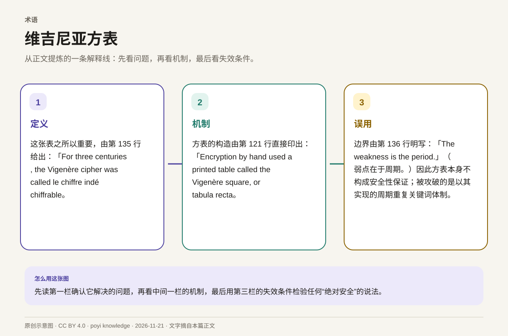

原理与机制
术语：维吉尼亚方表（Tabula Recta）。方表的构造由第 121 行直接印出：「Encryption by hand used a printed table called the Vigenère square, or tabula recta, a 26-by-26 grid in which each row is the alphabet shifted one position further than the row above.」（手工加密使用一张印好的表，称为维吉尼亚方表或 tabula recta，是一个 26×26 的网格，其中每一行都是字母表比上一行再移一位。）同一行给出查表前的位移口径：「A means shift 0, B means shift 1, and L means shift 11.」（A 表示位移 0，B 表示位移 1，L 表示位移 11。）因此该条目的对象是这张表本身及其行列约定，而不是维吉尼亚密码的密钥调度。

为什么重要
这张表之所以重要，由第 135 行给出：「For three centuries, the Vigenère cipher was called le chiffre indéchiffrable, the unbreakable cipher.」（三个世纪里，维吉尼亚密码被称为 le chiffre indéchiffrable，即不可破的密码。）同行说明它压平了此前击败所有常用密码的单字母频率，并给出方表带来的实际能力：「A clerk with a keyword and a printed square could produce ciphertext that the best analysts of the 1700s could not read.」（一个办事员拿着一个关键词和一张印好的方表，就能产生 1700 年代最好的分析员也读不懂的密文。）重要性的依据是这一能力落差，而不是任何强度证明。
应用与实例
留存件给出一个可逐步核对的手算例。第 119 行印「Plaintext: ATTACKATDAWN Keyword: LEMON Keystream: LEMONLEMONLE」（明文 ATTACKATDAWN，关键词 LEMON，密钥流 LEMONLEMONLE）；第 121 行说明表中所列部分「contains every row needed for the keyword LEMON」（包含关键词 LEMON 所需的每一行）；第 131 行印出结果「Plaintext: ATTACKATDAWN Keystream: LEMONLEMONLE Ciphertext: LXFOPVEFRNHR」（密文 LXFOPVEFRNHR）。解密规则由第 133 行印出：「To decrypt, select the row for the keystream letter and find the ciphertext letter within that row.The plaintext is the column heading above it.」（解密时选取密钥流字母对应的行，在该行内找到密文字母，其上方的列标题即明文。）本节据此给出的是查表方向，不是新的算法主张。
边界与攻击面
边界由第 136 行明写：「The weakness is the period.」（弱点在于周期。）同行给出机制：「The ciphertext consists of five interleaved Caesar ciphers, and an analyst who knows the period can separate them.」（密文由五个交错的凯撒密码组成，知道周期的分析者可以把它们分开。）并给出求周期方法的出处与年份：「The method for finding the period, the Kasiski attack, was published in 1863 by Friedrich Kasiski, a retired Prussian infantry officer.」（求周期的方法即 Kasiski 攻击，由退役普鲁士步兵军官 Friedrich Kasiski 于 1863 年发表。）因此方表本身不构成安全性保证；被攻破的是以其实现的周期重复关键词体制。
历史与背景
留存件印出的时间坐标有三处。第 115 行是一条图注：「Thomas Jefferson's Vigenère Cipher Table - 1803」（托马斯·杰斐逊的维吉尼亚密码表，1803 年）。第 135 行给出「For three centuries」的不可破称谓期，并提到 1700 年代的分析员。第 136 行给出 1863 年 Kasiski 发表求周期方法。该条目只陈述这三处印出的坐标，不据此断言方表的最早发明者或发明年份——留存件没有印出，故不写入。
逐步示例与核验
定义检查模型
上位概念 → 区别特征 → 正例 → 反例 → 易混边界。正例必须落在外延内；反例必须刚好跨过边界；同义词不能代替定义。
参考出处
- Wikipedia search entry for 维吉尼亚方表. https://zh.wikipedia.org/w/index.php?search=%E7%BB%B4%E5%90%89%E5%B0%BC%E4%BA%9A%E6%96%B9%E8%A1%A8
- RFC 4949: Internet Security Glossary, Version 2. https://www.rfc-editor.org/rfc/rfc4949